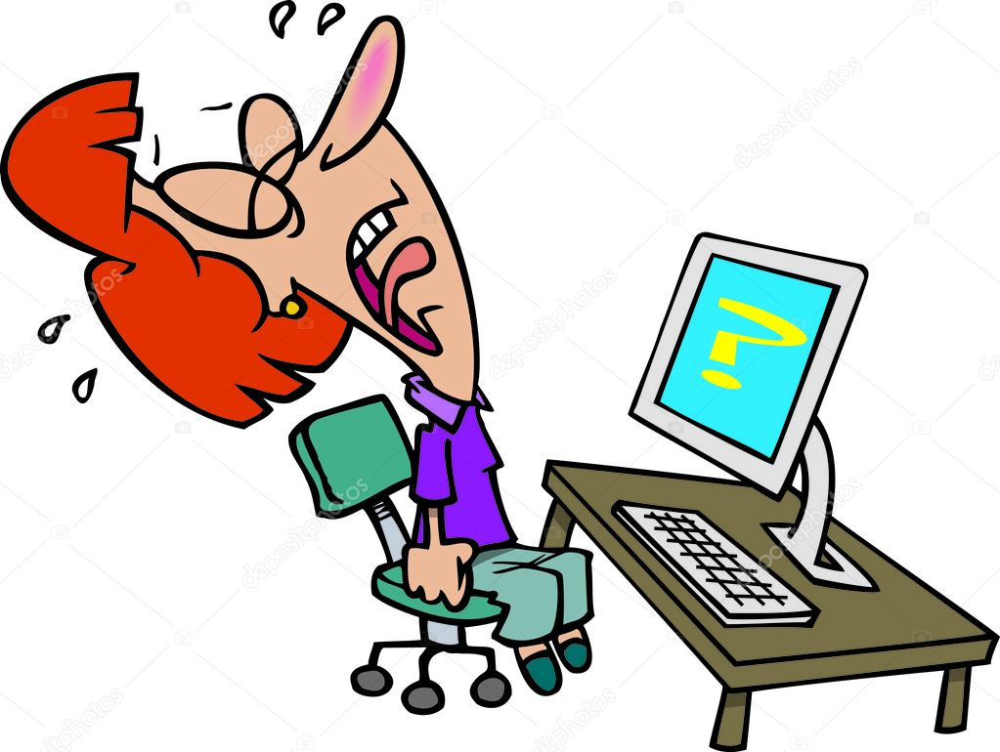
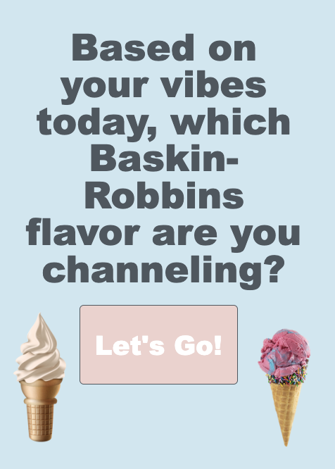
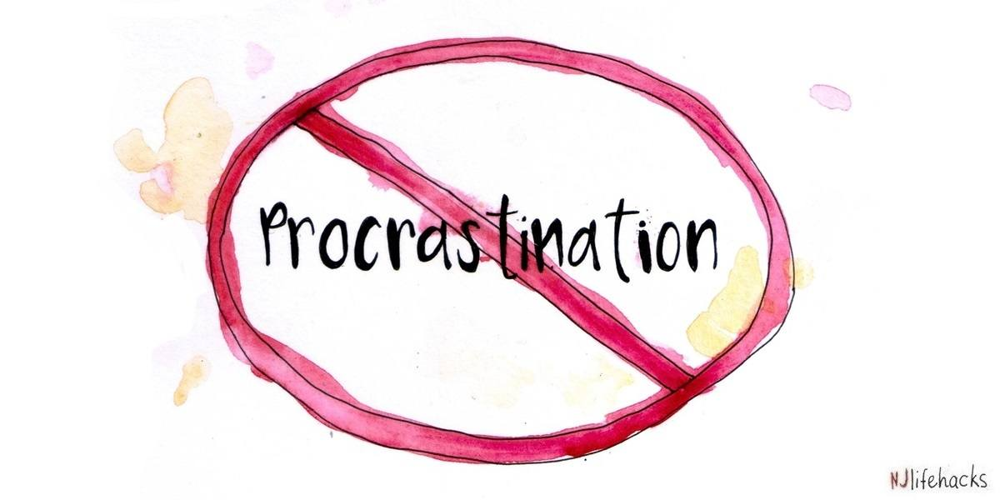

Before taking computer science, I did not know much about coding or web design. At the beginning of the year, many topics felt confusing and difficult to understand. I struggled with placing images correctly, organizing my pages, and fixing mistakes in my code. Sometimes I would spend a long time trying to figure out why something was not working. I also did not know how to use CSS to style websites or make webpages look visually appealing.

Throughout this class, I became more confident in my coding and problem-solving abilities. I learned how to use HTML and CSS to create and design websites, customize colors and fonts, add images and hyperlinks, and organize content more clearly. I also learned how to use JavaScript concepts such as variables, functions, onEvent, setScreen, and if/else statements while creating my recommendation app. Over time, I improved at debugging my code and solving problems independently. I am now more comfortable working with technology and designing websites, and I am proud of how much I have grown this year.

Even though I have improved a lot this year, there are still computer science skills I want to continue working on. One thing I want to improve is my time management when working on larger coding projects, especially projects like the CAP. Sometimes it was difficult to balance designing the website, fixing coding errors, and completing all of the required parts on time. Through this experience, I learned how important planning, organization, and pacing yourself are when creating bigger projects. In the future, I want to become better at managing my time so I can work more efficiently and feel less stressed during major assignments.
